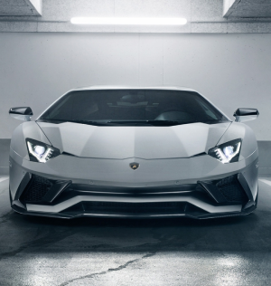

|  |
Lamborghini Aventador
|
The Lamborghini Aventador is a high-performance sports car manufactured by the Italian automaker Lamborghini. It was first introduced in 2011 as a successor to the Lamborghini Murciélago.
The Aventador features a mid-engine layout and is powered by a naturally aspirated 6.5-liter V12 engine, which produces a whopping 700 horsepower and 509 lb-ft of torque. This engine is mated to a 7-speed automatic transmission, and the car can go from 0 to 60 mph in just 2.9 seconds, with a top speed of over 217 mph.
The Aventador's exterior design is characterized by sharp angles and aerodynamic lines, with Lamborghini's signature scissor doors adding to its dramatic appearance. The interior of the Aventador is also luxurious, with high-quality materials and a modern design.
Over the years, Lamborghini has introduced various special editions and variants of the Aventador, such as the Aventador S, Aventador SVJ, and Aventador Roadster. These models have offered even more power and performance, making the Aventador one of the most iconic and sought-after supercars in the world.